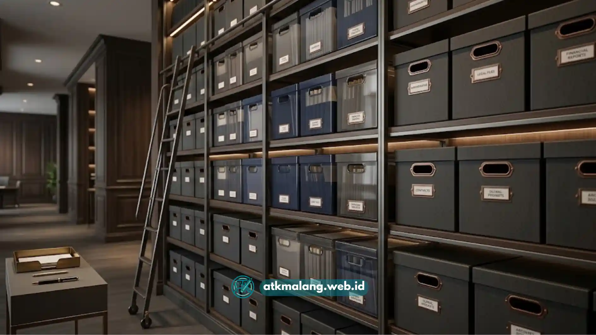

Memilih antara box file plastik dan box file duplex karton sering menjadi pertimbangan tersendiri bagi pengelola arsip kantor.
Kedua bahan perlengkapan Alat Tulis Kantor ini memiliki karakteristik yang cukup berbeda dalam hal ketahanan, biaya, dan kepraktisan penggunaan sehari-hari.
Box file plastik lebih tahan air dan awet dalam pemakaian jangka panjang, sementara box file duplex karton umumnya lebih ringan dan lebih terjangkau dari sisi harga.
- Box file plastik lebih tahan air dan lebih awet dalam pemakaian jangka panjang.
- Box file duplex karton umumnya lebih ringan dan lebih terjangkau dari sisi harga.
- Pemilihan bahan sebaiknya disesuaikan dengan kondisi ruangan dan frekuensi pemindahan arsip.
- Box file plastik lebih cocok untuk arsip aktif yang sering diakses.
- Box file duplex karton cukup memadai untuk arsip pasif dengan intensitas penggunaan rendah.
Daftar Isi
Apa Perbedaan Utama Box File Plastik dan Duplex Karton
Perbedaan paling mendasar antara keduanya terletak pada bahan pembuatnya. Box file plastik terbuat dari bahan polypropylene atau sejenisnya yang bersifat lentur namun kuat.
Sedangkan box file duplex karton terbuat dari kertas tebal berlapis yang dilaminasi agar lebih kokoh saat digunakan sebagai sarana pengarsipan Alat Tulis Kantor.
Dari segi tampilan, box file duplex karton biasanya memiliki motif atau warna cetak yang bervariasi, sementara box plastik cenderung tampil polos namun terlihat lebih tahan lama.
Bagaimana Ketahanan Kedua Bahan Ini Terhadap Kelembapan
Box file plastik memiliki keunggulan signifikan dalam menghadapi kelembapan udara maupun tumpahan cairan secara tidak sengaja, karena sifat bahannya yang tidak menyerap air.
Hal ini membuat dokumen di dalamnya lebih aman meskipun berada di ruangan dengan kelembapan cukup tinggi untuk pelestarian Alat Tulis Kantor.
Sebaliknya, box file duplex karton rentan terhadap kelembapan. Jika terkena air, box karton berisiko melunak, berjamur, atau merusak dokumen di dalamnya.
Bagaimana Perbandingan dari Sisi Biaya dan Ketersediaan
Secara umum, box file duplex karton cenderung dijual dengan harga lebih terjangkau dibandingkan box file plastik, karena proses produksi dari bahan kertas lebih murah.
Hal ini membuat duplex karton sering menjadi pilihan untuk pengadaan arsip Alat Tulis Kantor dalam jumlah besar dengan anggaran terbatas.
Namun, biaya awal perlu dipertimbangkan bersama usia pakainya. Box plastik meski sedikit mahal, umumnya tidak perlu sering diganti terutama untuk penyimpanan jangka panjang.

Penataan box file di rak arsip sangat menentukan kerapian ruangan kantor.Mana yang Lebih Cocok untuk Arsip Aktif dan Arsip Pasif
Untuk dokumen arsip aktif yang masih sering dibuka dan digunakan harian, box file plastik lebih direkomendasikan karena lebih tahan terhadap frekuensi pemakaian tinggi.
Proses buka tutup berulang membuat wadah Alat Tulis Kantor dari bahan plastik tidak mudah rusak di bagian tepinya.
Sementara itu, untuk arsip pasif yang jarang diakses, box file duplex karton bisa menjadi pilihan memadai asalkan disimpan di ruangan dengan kondisi minim kelembapan.
Bagaimana Kepraktisan Keduanya Saat Dipindahkan atau Disusun
Dari sisi bobot, box file duplex karton umumnya lebih ringan sehingga lebih mudah diangkat dan dipindahkan, terutama saat relokasi arsip ke ruangan lain.
Namun, box karton yang sudah lama digunakan berisiko lebih cepat lecek pada bagian sudut. Sedangkan box file plastik memiliki struktur Alat Tulis Kantor yang lebih kaku dan kokoh.
Kekakuan ini membuat plastik lebih stabil saat ditumpuk dalam jumlah banyak, menjaga bentuk box tetap presisi meski sudah digunakan dalam waktu lama.
Bagaimana Cara Menentukan Pilihan yang Tepat untuk Kebutuhan Arsip
Penentuan pilihan sebaiknya disesuaikan dengan kondisi ruang penyimpanan, anggaran yang tersedia, serta jenis dokumen yang akan disimpan.
Jika ruangan berisiko lembap atau dokumen sering diakses, box file plastik menjadi pilihan aman. Namun jika kebutuhan sementara dan anggaran terbatas, duplex karton menjadi opsi efisien.
Box file plastik dan duplex karton sama-sama berfungsi sebagai wadah penyimpanan, tinggal mencocokkan mana Alat Tulis Kantor yang paling sesuai dengan intensitas kerja Anda.